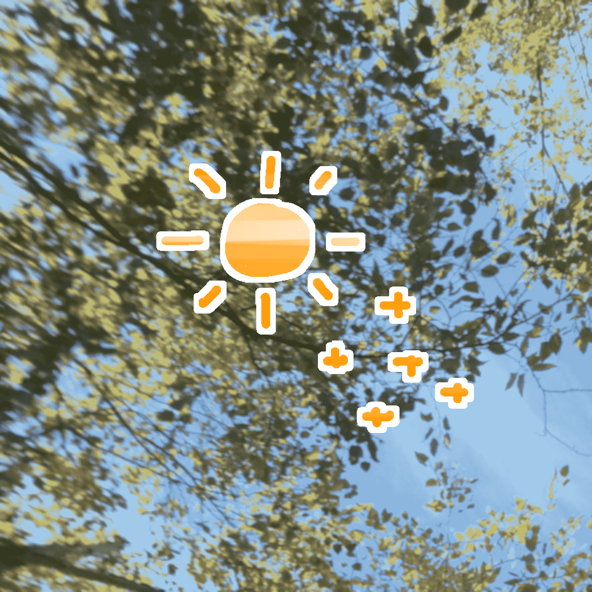
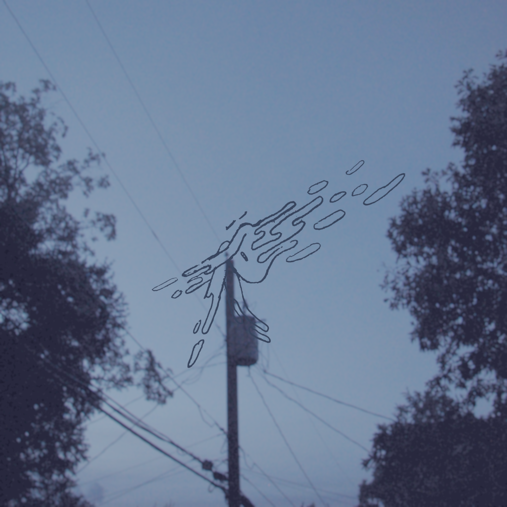
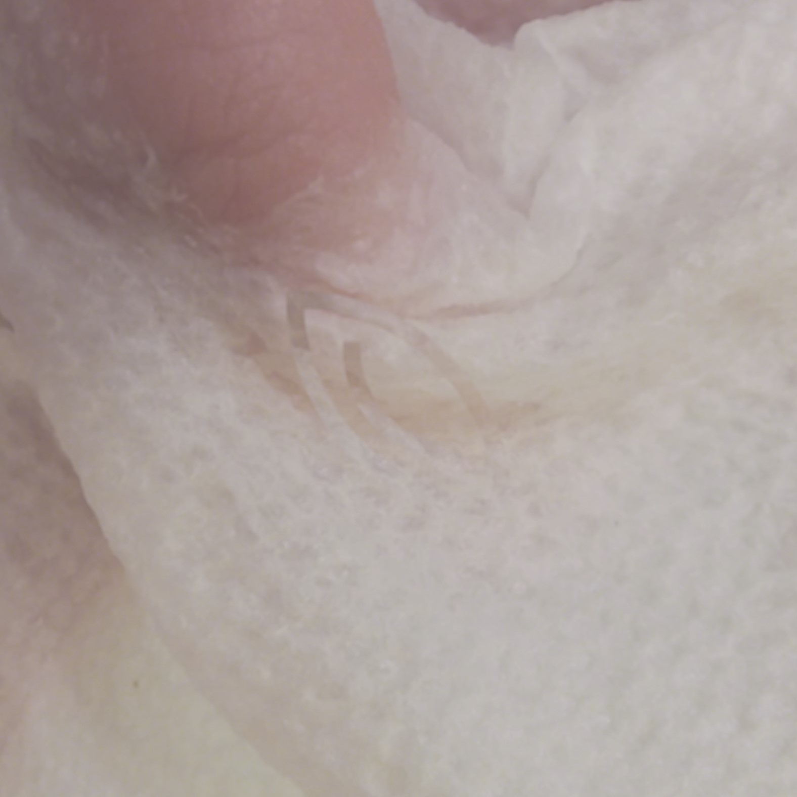
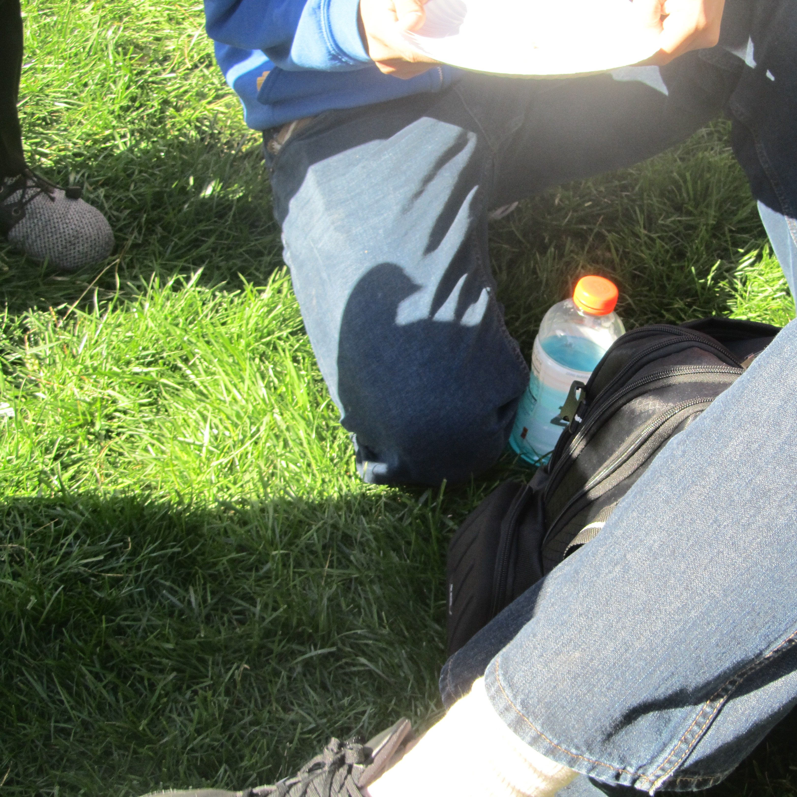

physi - love, from the trees and the sun (Album, April 8th 2022)
a lot of songs about trees and nature. i like to call it "sunset music".

physi - fog body (Album, November 20th 2020)
kind of sounds like a cloudy day. ambient drones and synthesizers.

variouswords - Freshmelt (EP, May 31st 2019)
my first real release - rough and sketchy. kind of innocent

physi - solstices (Compilation, ongoing)